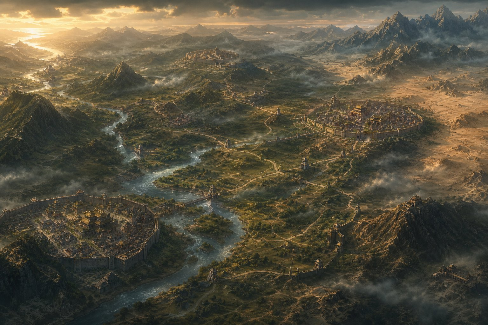

بازار و تجارت
مبادلهی منابع میان حکومتها؛ سود یا فداکاری.

چند حکومت، یک سرزمین؛ جادهها، شهرها و فورتها داستان را پیش میبرند.
مبادلهی منابع میان حکومتها؛ سود یا فداکاری.
پیمانهای دفاعی و دیپلماسی؛ دشمن را از دو طرف نگیر.
پایگاههای کنترلشده روی جادهها؛ گمرک، دیدهبانی، کنترل مسیر.
نقشهی واقعی بازی هنوز در حال طراحی است؛ اسکرینشات آن بهزودی همینجا نمایش داده میشود.